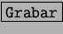
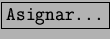

Una macro es un conjunto de intrucciones que se ejecutan en conjunto y que permiten hacer tareas repetitivas y complejas. Para crear una macro dentro de StarBasic tenemos que acceder a [Herramientas] y [Macro...] se nos mostrá el cuadro Macro de la figura 5.37.
Lo primero será introducir el nombre de la macro a grabar y luego presionamos . Mientras estemos grabando la macro se almacenará cualquier acción que ejecutemos, tanto con el ratón como a través del teclado. Para finalizar presionaremos en el cuadro detener macro que se ve en la figura 5.38
Una vez grabada la macro podremos depurarla para ajustar algunos parámetros o para borrar aquellas partes en las que nos hayamos equivocado o queramos modificar. Las macros y sus modificaciones se hace utilizando el lenguaje que tiene la StarCalc y que se denomina StarBasic. Es un lenguaje muy intuitivo y que se parace al Visual Basic para Aplicaciones de la Excel.Figura 5.39.
Cuando la se tenga la macro finalizada, se puede asignar dicha a macro a una tecla o combinación de teclas. Para esto se accede al menú [Herramientas], [Macro]. Dentro del cuadro de Macro presionaremos sobre  y seleccionaremos la combinación de teclas que quereamos utilizar para activar la macro creada.